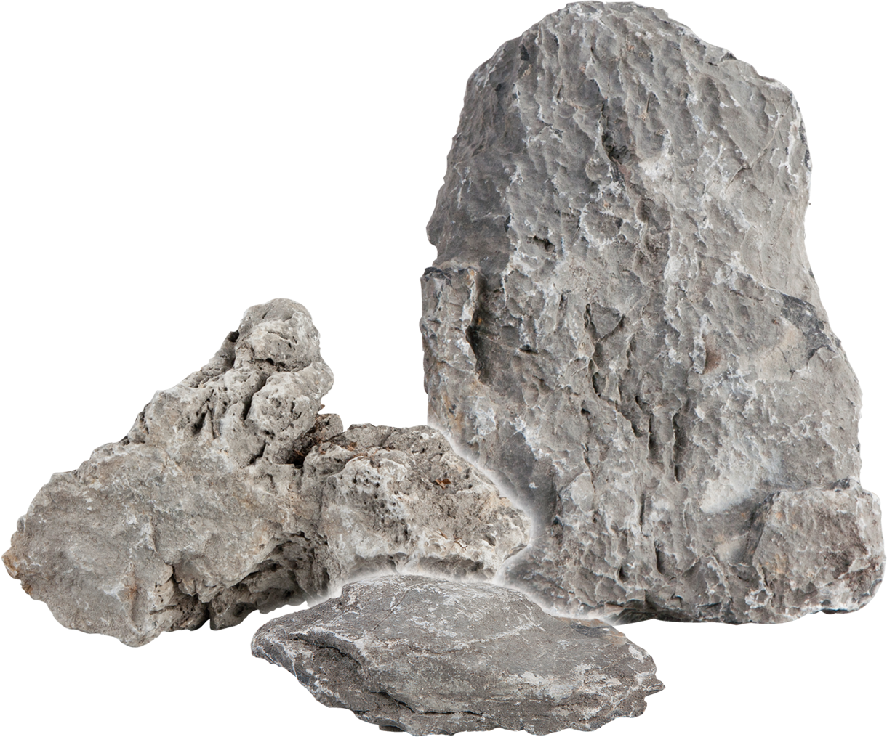

Luna:
New Moon
by Ian McDonald
It’s not that I don’t admire a lot of what McDonald’s doing here. There’s the worldbuilding, and the sense of creating a bigger world. The permissiveness of lunar society, and the ordinariness of its queerness. And his characters are interesting. I want to be able to like them more than I do. (I have a feeling I may have liked them more in the first volume, on rather less exposure.) But in the end, Luna: Moon Rising leaves me cold and unsatisfied, and doesn’t leave me feeling like the story has come to a resolution.
